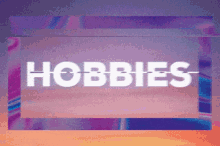

Agung Sanjaya Sukmawan
Summary
I am someone who is interested in product development, especially in how to make the products provided to users safe to use without
harming any party. Wiith my experience as quality assurance where I collaborate with business analysts, system analysts, users, and
development teams to develop products according to the requirements expected by users. It doesn't stop with what I've been through and
what I've got, I am also someone who wants to continue to develop my potential to become a better person day by day
Education
Work Experience
-
PT. Nawa Data Solutions (Quality Assurance Engineering)
Apr 2023 - Present
- Testing the products that will be delivered to the project team
- Ensure that there are no defects in the product to be released
- Convert the test script into an automated test using Katalon
- Responsible for making the automation test program code more dynamic and readable
- Responsible for making automation test program code that can be directly used by users
-
PT Bank Mandiri Persero Tbk (Quality Assurance)
Jun 2022 - Apr 2023
- Create efficiency test cases that cover all existing requirements
- Create test data according to the needs of test cases
- Patching data in the database for test data needs
- Responsible for designing and implementing the test that ensure the quality and the functionality of a product
- Collaborate with business analysts, product owner, and development teams to develop products according to the requirements expected by users
- Collaboration with users to test when the product will be released to production
- Collaborate with QA team to work as best as possible based on Software Testing Life Cycle
- Run test cases that have been made to applications that have been developed
- Carry out testing with standard IT Testing Management (Positive Test, Negative test, Regression Test, etc.) on SIT and UAT
- Rising, monitoring, and reporting all defects/bugs on Jira and communicate to the relevant PIC for improvemen
- Report all activities and findings to the team leader
Skill
- Jira
- Zephyr
- Javascript
- Node.js
- PHP
- Python
- MySQL
- Git
- GitHub
- GitLab
- Bitbucket
- Katalon Studio
Certification
- Course (2021): Pengenalan ke Logika Pemrograman (Programming Logic 101)
- Course (2021): Belajar Dasar Visualisasi Data
- Course (2021): Memulai Pemrograman Dengan Python
- Course (2021): Belajar Machine Learning untuk Pemula
- Course (2021): Belajar Dasar Pemrograman JavaScript
- Course (2021): Belajar Membuat Aplikasi Back-End untuk Pemula
- College Essay (2020): Pembuatan Website Toko Remaja Gordyn dengan Fitur Booking untuk Survey dan Pemasangan ke Tempat
Pelanggan
- Thesis (2021): Analisis Sentimen Tanggapan Masyarakat di Media Sosial Twitter terhadap Vaksinasi COVID-19 di Indonesia
menggunakan Metode Support Vector Machine (SVM)
My Hobbies

Contact Me